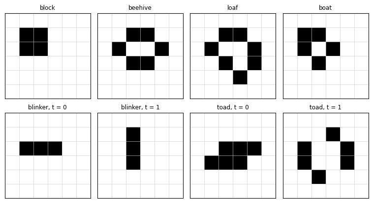
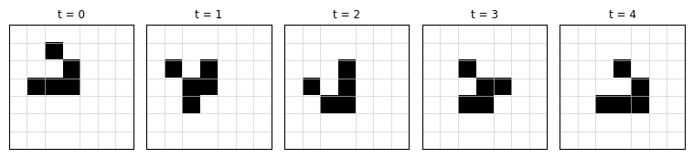

Conway’s Game of Life is a two-dimensional cellular automaton on a square lattice with the Moore neighbourhood of eight cells. Martin Gardner introduced it to a wide audience in 1970 (gardner1970life?). The rules are:
Birth: a dead cell with exactly 3 live neighbours becomes alive.
Survival: a live cell with 2 or 3 live neighbours stays alive.
Death: every other cell is dead in the next generation.
In the notation for “life-like” rules this is B3/S23. Berlekamp, Conway and Guy outlined a proof that the Game of Life can simulate a universal computer (berlekamp1982winning?). Reference code: amlab/cellular_automata/life.py.
Core activity
Implement one generation of the Game of Life with periodic boundaries, validate it on a blinker and a glider, and classify the small patterns below as still lifes, oscillators or spaceships. The page Random Soups then follows a random initial grid.
Prediction
Exercise
Before you code, take a horizontal row of three live cells (the blinker). Apply the rules by hand for two generations. What do you get?
Solution
The two end cells have one live neighbour each, so they die. The centre cell has two and survives. The cells directly above and below the centre have three live neighbours, so they are born. After one generation you get a vertical row of three cells. The same argument turned by 90 degrees gives the horizontal row back after two generations. The blinker is an oscillator with period 2.
Implementation
Count the live neighbours of every cell by adding the eight shifted copies of the grid. Then apply birth and survival as boolean masks.
Exercise
Complete life_step() for a grid with periodic boundaries.
def life_step(grid): neighbours = np.zeros_like(grid)for dy in (-1, 0, 1):for dx in (-1, 0, 1):if dy or dx: neighbours +=# TODO: grid shifted by (dy, dx) with np.roll, periodic born =# TODO: dead and exactly 3 neighbours survive =# TODO: alive and 2 or 3 neighboursreturn (born | survive).astype(grid.dtype)
Solution
def life_step(grid): neighbours = np.zeros_like(grid)for dy in (-1, 0, 1):for dx in (-1, 0, 1):if dy or dx: neighbours += np.roll(np.roll(grid, dy, axis=0), dx, axis=1) born = (grid ==0) & (neighbours ==3) survive = (grid ==1) & ((neighbours ==2) | (neighbours ==3))return (born | survive).astype(grid.dtype)
Validation
A blinker has period 2. A glider returns to its shape after 4 generations, shifted by one cell diagonally (gardner1970life?). period_and_shift() checks both.
import numpy as npimport matplotlib.pyplot as pltfrom amlab.cellular_automata.life import PATTERNS, place, life_step, simulate_life, period_and_shiftfor name in PATTERNS: period, shift = period_and_shift(place((24, 24), name, 10, 10)) kind ="spaceship"if shift != (0, 0) else ("still life"if period ==1else"oscillator")print(f"{name:8s} period {period}, shift {shift}: {kind}")
block period 1, shift (0, 0): still life
beehive period 1, shift (0, 0): still life
loaf period 1, shift (0, 0): still life
boat period 1, shift (0, 0): still life
blinker period 2, shift (0, 0): oscillator
toad period 2, shift (0, 0): oscillator
beacon period 2, shift (0, 0): oscillator
glider period 4, shift (1, 1): spaceship
Experiment: the pattern zoo

Figure 1: Top row: still lifes (block, beehive, loaf, boat). Bottom row: two generations of the period-2 oscillators blinker and toad.

Figure 2: Five generations of a glider. At t = 4 the glider has the shape of t = 0, moved one cell down and one cell right.
Interpretation
Gliders move at one cell every four generations along a diagonal. On a periodic grid a glider can come back and collide with debris, so the final state depends on the grid size.
Exercise
Place two gliders on a \(40 \times 40\) periodic grid so that they collide. Simulate 200 generations. What remains after the collision?
Solution
glider = PATTERNS["glider"]g = np.zeros((40, 40), dtype=np.uint8)g[5:8, 5:8] = glider # moves down and rightg[5:8, 25:28] = glider[:, ::-1] # mirrored: moves down and leftfinal = simulate_life(g, 200)[-1]print("Live cells after 200 generations:", int(final.sum()))
Live cells after 200 generations: 8
The outcome depends on the relative position and phase of the gliders: they can annihilate, leave a still life or oscillators, or produce new gliders. Shift one glider by one cell and compare.
---title: "Game of Life"subtitle: "Module 6: Explorables and Discrete Models"format: html---Conway's Game of Life is a two-dimensional cellular automaton on a square lattice with the Moore neighbourhood of eight cells. Martin Gardner introduced it to a wide audience in 1970 [@gardner1970life]. The rules are:- **Birth**: a dead cell with exactly 3 live neighbours becomes alive.- **Survival**: a live cell with 2 or 3 live neighbours stays alive.- **Death**: every other cell is dead in the next generation.In the notation for "life-like" rules this is B3/S23. Berlekamp, Conway and Guy outlined a proof that the Game of Life can simulate a universal computer [@berlekamp1982winning]. Reference code: [amlab/cellular_automata/life.py](../../amlab/cellular_automata/life.py).::: {.callout-important}## Core activityImplement one generation of the Game of Life with periodic boundaries, validate it on a blinker and a glider, and classify the small patterns below as still lifes, oscillators or spaceships. The page [Random Soups](life-soup.qmd) then follows a random initial grid.:::## Prediction::: {.callout-note}## ExerciseBefore you code, take a horizontal row of three live cells (the *blinker*). Apply the rules by hand for two generations. What do you get?:::::: {.callout-tip collapse="true"}## SolutionThe two end cells have one live neighbour each, so they die. The centre cell has two and survives. The cells directly above and below the centre have three live neighbours, so they are born. After one generation you get a vertical row of three cells. The same argument turned by 90 degrees gives the horizontal row back after two generations. The blinker is an oscillator with period 2.:::## ImplementationCount the live neighbours of every cell by adding the eight shifted copies of the grid. Then apply birth and survival as boolean masks.::: {.callout-note}## ExerciseComplete `life_step()` for a grid with periodic boundaries.```pythondef life_step(grid): neighbours = np.zeros_like(grid)for dy in (-1, 0, 1):for dx in (-1, 0, 1):if dy or dx: neighbours +=# TODO: grid shifted by (dy, dx) with np.roll, periodic born =# TODO: dead and exactly 3 neighbours survive =# TODO: alive and 2 or 3 neighboursreturn (born | survive).astype(grid.dtype)```:::::: {.callout-tip collapse="true"}## Solution```pythondef life_step(grid): neighbours = np.zeros_like(grid)for dy in (-1, 0, 1):for dx in (-1, 0, 1):if dy or dx: neighbours += np.roll(np.roll(grid, dy, axis=0), dx, axis=1) born = (grid ==0) & (neighbours ==3) survive = (grid ==1) & ((neighbours ==2) | (neighbours ==3))return (born | survive).astype(grid.dtype)```:::## ValidationA blinker has period 2. A glider returns to its shape after 4 generations, shifted by one cell diagonally [@gardner1970life]. `period_and_shift()` checks both.```{python}import numpy as npimport matplotlib.pyplot as pltfrom amlab.cellular_automata.life import PATTERNS, place, life_step, simulate_life, period_and_shiftfor name in PATTERNS: period, shift = period_and_shift(place((24, 24), name, 10, 10)) kind ="spaceship"if shift != (0, 0) else ("still life"if period ==1else"oscillator")print(f"{name:8s} period {period}, shift {shift}: {kind}")```## Experiment: the pattern zoo```{python}#| echo: false#| label: fig-life-zoo#| fig-cap: 'Top row: still lifes (block, beehive, loaf, boat). Bottom row: two generations of the period-2 oscillators blinker and toad.'#| fig-width: 8#| fig-height: 4.5def draw(ax, g, title): ax.imshow(g, cmap="binary", interpolation="nearest") ax.set_xticks(np.arange(-0.5, g.shape[1], 1), minor=True) ax.set_yticks(np.arange(-0.5, g.shape[0], 1), minor=True) ax.grid(which="minor", color="0.8", linewidth=0.5) ax.tick_params(which="both", length=0, labelbottom=False, labelleft=False) ax.set_title(title, fontsize=9)fig, axes = plt.subplots(2, 4, figsize=(8, 4.5))for ax, name inzip(axes[0], ("block", "beehive", "loaf", "boat")): draw(ax, place((6, 6), name, 1, 1), name)for k, name inenumerate(("blinker", "toad")): g = simulate_life(place((6, 6), name, 2, 1), 2) draw(axes[1, 2* k], g[0], f"{name}, t = 0") draw(axes[1, 2* k +1], g[1], f"{name}, t = 1")plt.tight_layout()plt.show()``````{python}#| echo: false#| label: fig-life-glider#| fig-cap: 'Five generations of a glider. At t = 4 the glider has the shape of t = 0, moved one cell down and one cell right.'#| fig-width: 8#| fig-height: 2g = simulate_life(place((7, 7), "glider", 1, 1), 5)fig, axes = plt.subplots(1, 5, figsize=(8, 2))for t, ax inenumerate(axes): draw(ax, g[t], f"t = {t}")plt.tight_layout()plt.show()```## Interpretation- Gliders move at one cell every four generations along a diagonal. On a periodic grid a glider can come back and collide with debris, so the final state depends on the grid size.::: {.callout-note}## ExercisePlace two gliders on a $40 \times 40$ periodic grid so that they collide. Simulate 200 generations. What remains after the collision?:::::: {.callout-tip collapse="true"}## Solution```{python}glider = PATTERNS["glider"]g = np.zeros((40, 40), dtype=np.uint8)g[5:8, 5:8] = glider # moves down and rightg[5:8, 25:28] = glider[:, ::-1] # mirrored: moves down and leftfinal = simulate_life(g, 200)[-1]print("Live cells after 200 generations:", int(final.sum()))```The outcome depends on the relative position and phase of the gliders: they can annihilate, leave a still life or oscillators, or produce new gliders. Shift one glider by one cell and compare.:::## Next[Random Soups](life-soup.qmd){.btn .btn-primary}